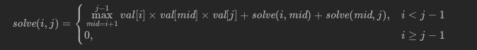

- 983 最低票价
- 组合总和 4
- 1928 规定时间内到达终点的最小花费
- LCP 09 最小跳跃次数
- 790 多米诺和托米诺平铺
- 96 不同的二叉搜索树
- 32 最长有效括号
- 322 零钱兑换
- 375 猜数字大小 2
- 213 打家劫舍2
- 3193 统计逆序对的数量
- 3180 执行操作可获得的最大总奖励 1
- 3181 执行操作可获得的最大总奖励 2
- 5 最长回文子串
- 3259 最多能量
- 72 编辑距离
- UNRESOLVED 638大礼包
- 1326灌溉花园的最少水龙头数目
- 152 乘积最大子数组
- 1547 UNSOLVED切棍子的最小成本
- 718 最长重复子数组
- 410分割数组的最大值
- 403 青蛙过河
- 416 分割等和子集
- UNSOLVED 329矩阵中的最长递增路径
- 1621大小为K的不重叠线段的数目
- 312 戳气球
- UNSOLVED 1735生成乘积数组的方案数
- UNSOLVED 3250单调数组对的数目
- 2464 有效分割中的最少子数组数目
- 935 骑士拨号器
983 最低票价
在一个火车旅行很受欢迎的国度，你提前一年计划了一些火车旅行。在接下来的一年里，你要旅行的日子将以一个名为 days 的数组给出。每一项是一个从 1 到 365 的整数。
火车票有 三种不同的销售方式 ：
一张 为期一天 的通行证售价为 costs[0] 美元；
一张 为期七天 的通行证售价为 costs[1] 美元；
一张 为期三十天 的通行证售价为 costs[2] 美元。
通行证允许数天无限制的旅行。 例如，如果我们在第 2 天获得一张 为期 7 天 的通行证，那么我们可以连着旅行 7 天：第 2 天、第 3 天、第 4 天、第 5 天、第 6 天、第 7 天和第 8 天。
返回 你想要完成在给定的列表 days 中列出的每一天的旅行所需要的最低消费 。
Click to expand
class Solution {
public:
int mincostTickets(vector<int>& days, vector<int>& costs) {
array<int, 366> dp; // dp[i]表示本年度第i天出游的花费
int last = min(costs[0], min(costs[1], costs[2]));
if (days.size() == 1) {
return last;
}
dp[days[0]] = last;
for (int i = days[0]; i <= days[1]; i++) {
dp[i] = last;
}
int index = 1;
for (int i = days[1]; i < 366; i++) {
if (i == days[index]) { // 这一天需要去旅游
index++;
if (i >= 30) { // 从30天前，7天前，1天前
dp[i] =
min(dp[i - 30] + costs[2],
min(dp[i - 7] + costs[1], dp[i - 1] + costs[0]));
} else if (i >= 7) {
dp[i] = min(
min(dp[i - 7] + costs[1], dp[i - 1] + costs[0]),
costs[2]); // 要么从七天前或者一天前或者涵盖在30天之内
} else {
dp[i] = min(dp[i - 1] + costs[0], min(costs[2], costs[1]));
}
last = dp[i]; // 最近一天总共花了多少钱
} else { // 不用旅游的花费
dp[i] = last;
}
if (index == days.size()) {
return dp[i];
}
}
return dp[365];
}
};
组合总和 4
给定一个由 不同 正整数组成的数组 nums ，和一个目标整数 target 。请从 nums 中找出并返回总和为 target 的元素组合的个数。数组中的数字可以在一次排列中出现任意次，但是顺序不同的序列被视作不同的组合。
Click to expand
class Solution {
public:
int combinationSum4(vector<int>& nums, int target) {
vector<int> dp(target+1,0);
dp[0]=1;
for(int i=1;i<=target;i++){
for(auto& num: nums){
if(num<=i&& dp[i - num] < INT_MAX - dp[i]){
dp[i]+=dp[i-num];
}
}
}
return dp[target];
}
};
1928 规定时间内到达终点的最小花费
一个国家有 n 个城市，城市编号为 0 到 n - 1 ，题目保证 所有城市 都由双向道路 连接在一起 。道路由二维整数数组 edges 表示，其中 edges[i] = [xi, yi, timei] 表示城市 xi 和 yi 之间有一条双向道路，耗费时间为 timei 分钟。两个城市之间可能会有多条耗费时间不同的道路，但是不会有道路两头连接着同一座城市。
每次经过一个城市时，你需要付通行费。通行费用一个长度为 n 且下标从 0 开始的整数数组 passingFees 表示，其中 passingFees[j] 是你经过城市 j 需要支付的费用。
一开始，你在城市 0 ，你想要在 maxTime 分钟以内 （包含 maxTime 分钟）到达城市 n - 1 。旅行的 费用 为你经过的所有城市 通行费之和 （包括 起点和终点城市的通行费）。
给你 maxTime，edges 和 passingFees ，请你返回完成旅行的 最小费用 ，如果无法在 maxTime 分钟以内完成旅行，请你返回 -1 。
Click to expand
class Solution {
public:
int minCost(int maxTime, vector<vector<int>>& edges, vector<int>& passingFees) {
int n=passingFees.size();//城市总数
vector<vector<int>> dp(maxTime+1,vector<int>(n,INT_MAX/2));//dp[t][i]表示t分钟到达城市i的最少通行费总和
dp[0][0]=passingFees[0];
for(int t=1;t<=maxTime;t++){
for(const auto& edge: edges){
int i=edge[0],j=edge[1],cost=edge[2];
if(cost<=t){//因为是双向道路，所以i, j之间可以互相到达
dp[t][i]=min(dp[t][i],dp[t-cost][j]+passingFees[i]);
dp[t][j]=min(dp[t][j],dp[t-cost][i]+passingFees[j]);
}
}
}
int ans=INT_MAX/2;
for(int i=1;i<=maxTime;i++){//找到到达n-1城市的最小值
ans=min(ans,dp[i][n-1]);
}
return ans==INT_MAX/2?-1:ans;
}
};
LCP 09 最小跳跃次数
为了给刷题的同学一些奖励，力扣团队引入了一个弹簧游戏机。游戏机由 N 个特殊弹簧排成一排，编号为 0 到 N-1。初始有一个小球在编号 0 的弹簧处。若小球在编号为 i 的弹簧处，通过按动弹簧，可以选择把小球向右弹射 jump[i] 的距离，或者向左弹射到任意左侧弹簧的位置。也就是说，在编号为 i 弹簧处按动弹簧，小球可以弹向 0 到 i-1 中任意弹簧或者 i+jump[i] 的弹簧（若 i+jump[i]>=N ，则表示小球弹出了机器）。小球位于编号 0 处的弹簧时不能再向左弹。
为了获得奖励，你需要将小球弹出机器。请求出最少需要按动多少次弹簧，可以将小球从编号 0 弹簧弹出整个机器，即向右越过编号 N-1 的弹簧。
思路：
从右向左计算dp值(从后向前)，当前位置如果为i 则它如果直接跳到右边（前面）去就是dp[jump[i]+i]+1（这个值已经计算过了），计算出当前位置dp[i]之后，当前位置i可以影响 i+1到dp[j] >= dp[i]+1位置上的值（因为某个位置可以跳到左边任意位置）注意遍历到dp[j]>=dp[i]+1即可。
Click to expand
class Solution {
public:
int minJump(vector<int>& jump) {
int n=jump.size();
vector<int> dp(n);
dp[n-1]=1;
for(int i=n-2;i>=0;i--){
dp[i]=(i+jump[i]>=n)?1: dp[jump[i]+i]+1;
for(int j=i+1;j<n&&dp[j]>=dp[i]+1;++j){
dp[j]=dp[i]+1;
}
}
return dp[0];
}
};
790 多米诺和托米诺平铺
有两种形状的瓷砖：一种是 2 x 1 的多米诺形，另一种是形如 "L" 的托米诺形。两种形状都可以旋转。
给定整数 n ，返回可以平铺 2 x n 的面板的方法的数量。返回对 109 + 7 取模 的值。
平铺指的是每个正方形都必须有瓷砖覆盖。两个平铺不同，当且仅当面板上有四个方向上的相邻单元中的两个，使得恰好有一个平铺有一个瓷砖占据两个正方形。
Click to expand
class Solution {
public:
int numTilings(int n) {
vector<long> dp(n+1,0);
if(n==1) return 1;
if(n==2) return 2;
constexpr static int mod=1e9+7;
dp[0]=1;
dp[1]=1;
dp[2]=2;
for(int i=3;i<=n;i++){
dp[i]=(dp[i-1]*2+dp[i-3])%mod;
}
return dp[n];
}
};
96 不同的二叉搜索树
给定一个整数 n,求以 1 ... n 为节点组成的二叉搜索树有多少种?
同义题：给定n,求所有二叉树的形状
Click to expand
class Solution {
public:
int numTrees(int n) {
vector<int> dp(n + 1);
dp[0] = 1;
for (int i = 1; i <= n; i++) {
for (int j = 1; j <= i; j++) {
dp[i] += dp[j - 1] * dp[i - j];
}
}
return dp[n];
}
};
32 最长有效括号
给你一个只包含 '(' 和 ')' 的字符串，找出最长有效（格式正确且连续）括号 子串 的长度。
Click to expand
class Solution {
public:
int longestValidParentheses(string s) {
int maxans = 0, n = s.length();
vector<int> dp(n, 0);
for (int i = 1; i < n; i++) {
if (s[i] == ')') {
if (s[i - 1] == '(') {
dp[i] = (i >= 2 ? dp[i - 2] : 0) + 2;
} else if (i - dp[i - 1] > 0 && s[i - dp[i - 1] - 1] == '(') {
dp[i] = dp[i - 1] + ((i - dp[i - 1]) >= 2 ? dp[i - dp[i - 1] - 2] : 0) + 2;
}
maxans = max(maxans, dp[i]);
}
}
return maxans;
}
};
322 零钱兑换
给你一个整数数组 coins ，表示不同面额的硬币；以及一个整数 amount ，表示总金额。
计算并返回可以凑成总金额所需的 最少的硬币个数 。如果没有任何一种硬币组合能组成总金额，返回 -1 。
你可以认为每种硬币的数量是无限的。
Click to expand
class Solution {
public:
int coinChange(vector<int>& coins, int amount) {
vector<int> dp(amount+1,INT_MAX);
dp[0]=0;
for(int i=0;i<coins.size();i++){
for(int j=coins[i];j<=amount;j++){
if(dp[j-coins[i]]!=INT_MAX){
dp[j]=min(dp[j-coins[i]]+1,dp[j]);
}
}
}
return dp[amount]>amount? -1: dp[amount];
}
};
375 猜数字大小 2
我们正在玩一个猜数游戏，游戏规则如下：
我从 1 到 n 之间选择一个数字。
你来猜我选了哪个数字。
如果你猜到正确的数字，就会 赢得游戏 。
如果你猜错了，那么我会告诉你，我选的数字比你的 更大或者更小 ，并且你需要继续猜数。
每当你猜了数字 x 并且猜错了的时候，你需要支付金额为 x 的现金。如果你花光了钱，就会 输掉游戏 。
给你一个特定的数字 n ，返回能够 确保你获胜 的最小现金数，不管我选择那个数字 。
为了将支付的金额最小化，除了需要将每次支付的金额控制在较低值以外，还需要在猜数字的过程中缩小所选数字的范围。当猜了数字 x 并且猜错时，会知道 x 比所选数字大还是小。如果 x 比所选数字大，则任何比 x 大的数字一定都比所选数字大，因此应该在比 x 小的数字中继续猜数字。如果 x 比所选数字小，同理可知应该在比 x 大的数字中继续猜数字。
用 f(i,j) 表示在范围 [i,j] 内确保胜利的最少金额，目标是计算 f(1,n)。
假设第一次猜的数字是 x 并且猜错，则需要支付金额 x，当 x 大于所选数字时，为了确保胜利还需要支付的金额是 f(1,x−1)，当 x 小于所选数字时，为了确保胜利还需要支付的金额是 f(x+1,n)。为了在任何情况下都能确保胜利，应考虑最坏情况，计算 f(1,n) 时应取上述两者的最大值：f(1,n)=x+max(f(1,x−1),f(x+1,n))。
为了将确保胜利的金额最小化，需要遍历从 1 到 n 的所有可能的 x，使得 f(1,n) 的值最小：
f(1,n)=min{x+max(f(1,x−1),f(x+1,n))} (1≤x≤n)
由于 f(1,x−1) 和 f(x+1,n) 都是比原始问题 f(1,n) 规模更小的问题，因此可以使用动态规划的方法求解。
动态规划的状态为 f(i,j)，表示在范围 [i,j] 内确保胜利的最少金额。
当 i=j 时范围 [i,j] 只包含 1 个数字，所选数字一定是范围内的唯一的数字，不存在猜错的情况，因此 f(i,j)=0；当 i>j 时范围 [i,j] 不存在，因此 f(i,j)=0。综合上述两种情况可知，动态规划的边界情况是：当 i≥j 时，f(i,j)=0。
当 i<j 时，在范围 [i,j] 内第一次猜的数字可能是该范围内的任何一个数字。在第一次猜的数字是 k 的情况下（i≤k≤j），在范围 [i,j] 内确保胜利的最少金额是 k+max(f(i,k−1),f(k+1,j))。需要遍历全部可能的 k 找到在范围 [i,j] 内确保胜利的最少金额，因此状态转移方程如下：
f(i,j)=(i≤k≤j) min{k+max(f(i,k−1),f(k+1,j))}
Click to expand
//逆序
class Solution {
public:
int getMoneyAmount(int n) {
vector<vector<int>> dp(n+1,vector<int>(n+1));
for(int i=n-1;i>=1;i--){
for(int j=i+1;j<=n;j++){
dp[i][j]=j+dp[i][j-1];
for(int k=i;k<j;k++){
dp[i][j]=min(dp[i][j],k+max(dp[i][k-1],dp[k+1][j]));
}
}
}
return dp[1][n];
}
};
//正序
class Solution {
public:
int getMoneyAmount(int n) {
vector<vector<int>> dp(n+2,vector<int>(n+2));
for(int l=2;l<=n;l++){
for(int i=1;i+l<=n+1;i++){
int j=i+l-1;
int minCost=INT_MAX;
for(int k=i;k<=j;k++){
int cost=k+max(dp[i][k-1],dp[k+1][j]);
minCost=min(cost,minCost);
}
dp[i][j]=minCost;
}
}
return dp[1][n];
}
};
213 打家劫舍2
你是一个专业的小偷，计划偷窃沿街的房屋，每间房内都藏有一定的现金。这个地方所有的房屋都 围成一圈 ，这意味着第一个房屋和最后一个房屋是紧挨着的。同时，相邻的房屋装有相互连通的防盗系统，如果两间相邻的房屋在同一晚上被小偷闯入，系统会自动报警 。
给定一个代表每个房屋存放金额的非负整数数组，计算你 在不触动警报装置的情况下 ，今晚能够偷窃到的最高金额。
Click to expand
class Solution {
public:
int rob_helper(vector<int>& nums,int start,int end){
int first=nums[start],second=max(nums[start],nums[start+1]);
for(int i=start+2;i<=end;i++){
int tmp=second;
second=max(nums[i]+first,second);
first=tmp;
}
return second;
}
int rob(vector<int>& nums) {
if(nums.size()==1) return nums[0];
if(nums.size()==2) return max(nums[0],nums[1]);
return max(rob_helper(nums,0,nums.size()-2),rob_helper(nums,1,nums.size()-1));
}
};
3193 统计逆序对的数量
给你一个整数 n 和一个二维数组 requirements ，其中 requirements[i] = [endi, cnti] 表示这个要求中的末尾下标和 逆序对 的数目。
整数数组 nums 中一个下标对 (i, j) 如果满足以下条件，那么它们被称为一个 逆序对 ：
i < j 且 nums[i] > nums[j]
请你返回 [0, 1, 2, ..., n - 1] 的 排列 perm 的数目，满足对 所有 的 requirements[i] 都有 perm[0..endi] 恰好有 cnti 个逆序对。
由于答案可能会很大，将它对 109 + 7 取余 后返回。
class Solution {
static constexpr int MOD=1'000'000'007;
public:
int numberOfPermutations(int n, vector<vector<int>>& requirements) {
vector<int> req(n,-1);
req[0]=0;
for(auto& p: requirements){
req[p[0]]=p[1];
}
if(req[0]){
return 0;
}
int m=ranges::max(req);
vector<vector<int>> memo(n,vector<int>(m+1,-1));
auto dfs=[&](auto &&dfs,int i,int j)->int{
if(i==0) return 1;//边界条件
int &res=memo[i][j];
if(res!=-1) return res;
res=0;
if(int r=req[i-1];r>=0){
if(j>=r&&j-i<=r){
res=dfs(dfs,i-1,r);
}
}else{
for(int k=0;k<=min(i,j);k++) res=(res+dfs(dfs,i-1,j-k))%MOD;
}
return res;
};
return dfs(dfs,n-1,req[n-1]);
}
};
3180 执行操作可获得的最大总奖励 1
给你一个整数数组 rewardValues，长度为 n，代表奖励的值。
最初，你的总奖励 x 为 0，所有下标都是 未标记 的。你可以执行以下操作 任意次 ：
从区间 [0, n - 1] 中选择一个 未标记 的下标 i。
如果 rewardValues[i] 大于 你当前的总奖励 x，则将 rewardValues[i] 加到 x 上（即 x = x + rewardValues[i]），并 标记 下标 i。
以整数形式返回执行最优操作能够获得的 最大 总奖励。
class Solution {
public:
int maxTotalReward(vector<int>& rewardValues) {
ranges::sort(rewardValues);
int m=rewardValues.back();
vector<int> dp(2*m);
dp[0]=1;
for(int x: rewardValues){
for(int k=2*x-1;k>=x;k--){
if(dp[k-x]){
dp[k]=1;
}
}
}
int res=0;
for(int i=0;i<dp.size();i++){
if(dp[i]){
res=i;
}
}
return res;
}
};
3181 执行操作可获得的最大总奖励 2
给你一个整数数组 rewardValues，长度为 n，代表奖励的值。
最初，你的总奖励 x 为 0，所有下标都是 未标记 的。你可以执行以下操作 任意次 ：
从区间 [0, n - 1] 中选择一个 未标记 的下标 i。
如果 rewardValues[i] 大于 你当前的总奖励 x，则将 rewardValues[i] 加到 x 上（即 x = x + rewardValues[i]），并 标记 下标 i。
以整数形式返回执行最优操作能够获得的 最大 总奖励。
思路：
定义 f[i][j] 表示能否从 rewardValues 的前 i 个数中得到总奖励 j。
设 rewardValues 的第 i 个数为 v，考虑 v 选或不选：
不选 v，问题变成能否从前 i−1 个数中得到总奖励 j，即 f[i][j]=f[i−1][j]。
选 v，问题变成能否从前 i−1 个数中得到总奖励 j−v，即 f[i][j]=f[i−1][j−v]，前提是 j 满足 j≥v 且 j−v<v，即 v≤j<2v。
选或不选满足其一即可，所以有 f[i][j]=f[i−1][j]|f[i−1][j−v]
其中 ∨ 即编程语言中的 ||。
初始值 f[0][0]=true。
答案为最大的满足 f[n][j]=true 的 j。
上面的转移方程，先去掉第一个维度，得到 f[j]=f[j]∨f[j−v]，其中 v≤j<2v。
进一步地，把一维数组压缩成一个二进制数 f，其中二进制从低到高第 j 位为 1 表示 f[j]=true，为 0 表示 f[j]=false。转换后 ∨ 就是或运算（OR）了。
比如 v=3，我们会把：
f[0] OR 到 f[3] 中；
f[1] OR 到 f[4] 中；
f[2] OR 到 f[5] 中。
这相当于取 f 的低 v 位，再左移 v 位，然后 OR 到 f 中，即编程语言中的 f |= (f & ((1 << v) - 1)) << v，具体来说：
(1 << v) - 1 会得到一个低 v 位全为 1 的二进制数。
f & ((1 << v) - 1) 得到 f 的低 v 位。
(f & ((1 << v) - 1)) << v 把 f & ((1 << v) - 1) 左移 v 位。
最后与 f 计算按位或，更新到 f 中，即 f |= (f & ((1 << v) - 1)) << v。
初始值 f=1。
答案为 f 的最高位，即 f 的二进制长度减一。
class Solution {
public:
int maxTotalReward(vector<int>& rewardValues) {
ranges::sort(rewardValues);
rewardValues.erase(unique(rewardValues.begin(),rewardValues.end()),rewardValues.end());
bitset<100000> f{1};
for(int v: rewardValues){
int shift=f.size()-v;
//先左移shift再右移shift, 把所有>= v的比特位置0
// f|=f<<shift>>shift<<v
f|=f<<shift >> (shift-v);
}
for(int i=rewardValues.back()*2-1;;i--){
if(f.test(i)) return i;
}
}
};
5 最长回文子串
给你一个字符串 s，找到 s 中最长的回文子串。
class Solution {
public:
string longestPalindrome(string s) {
int n=s.length();
if (n<2) return s;
int maxLen=1;
int begin=0;
vector<vector<bool>> dp(n,vector<bool>(n,true));// dp[i][j]表示s[i..j]是否为回文串
for(int l=2;l<=n;l++){
for(int i=0;i<n;i++){
int j=l+i-1;
if(j>=n) break;
if(s[i]!=s[j]){
dp[i][j]=false;
}else{
if(j-i<3){
dp[i][j]=true;
}else{
dp[i][j]=dp[i+1][j-1];
}
}
if(dp[i][j]&&j-i+1>maxLen){
maxLen=j-i+1;
begin=i;
}
}
}
return s.substr(begin,maxLen);
}
};
3259 最多能量
来自未来的体育科学家给你两个整数数组 energyDrinkA 和 energyDrinkB，数组长度都等于 n。这两个数组分别代表 A、B 两种不同能量饮料每小时所能提供的强化能量。
你需要每小时饮用一种能量饮料来 最大化 你的总强化能量。然而，如果从一种能量饮料切换到另一种，你需要等待一小时来梳理身体的能量体系（在那个小时里你将不会获得任何强化能量）。
返回在接下来的 n 小时内你能获得的 最大 总强化能量。
注意 你可以选择从饮用任意一种能量饮料开始。
Click to expand
class Solution {
public:
long long maxEnergyBoost(vector<int>& energyDrinkA, vector<int>& energyDrinkB) {
int n=energyDrinkA.size();
vector<array<long long,2>> dp(n+2);
for(int i=0;i<n;i++){
dp[i+2][0]=max(dp[i+1][0],dp[i][1])+energyDrinkA[i];
dp[i+2][1]=max(dp[i][0],dp[i+1][1])+energyDrinkB[i];
}
return ranges::max(dp.back());
}
};
72 编辑距离
给你两个单词 word1 和 word2， 请返回将 word1 转换成 word2 所使用的最少操作数 。
你可以对一个单词进行如下三种操作：
插入一个字符
删除一个字符
替换一个字符
class Solution {
public:
int minDistance(string word1, string word2) {
int n=word1.length();
int m=word2.length();
vector<vector<int>> memo(n,vector<int>(m,-1));
auto dfs=[&](auto&& dfs,int i,int j)->int{
if(i<0){
return j+1;
}
if(j<0) return i+1;
int &res=memo[i][j];
if(res!=-1) return res;
if(word1[i]==word2[j]){
return res=dfs(dfs,i-1,j-1);
}
return res=min(min(dfs(dfs,i-1,j),dfs(dfs,i,j-1)),dfs(dfs,i-1,j-1))+1;
};
return dfs(dfs,n-1,m-1);
}
};
UNRESOLVED 638 大礼包
在 LeetCode 商店中， 有 n 件在售的物品。每件物品都有对应的价格。然而，也有一些大礼包，每个大礼包以优惠的价格捆绑销售一组物品。
给你一个整数数组 price 表示物品价格，其中 price[i] 是第 i 件物品的价格。另有一个整数数组 needs 表示购物清单，其中 needs[i] 是需要购买第 i 件物品的数量。
还有一个数组 special 表示大礼包，special[i] 的长度为 n + 1 ，其中 special[i][j] 表示第 i 个大礼包中内含第 j 件物品的数量，且 special[i][n] （也就是数组中的最后一个整数）为第 i 个大礼包的价格。
返回 确切 满足购物清单所需花费的最低价格，你可以充分利用大礼包的优惠活动。你不能购买超出购物清单指定数量的物品，即使那样会降低整体价格。任意大礼包可无限次购买。
class Solution {
public:
map<vector<int>, int> memo;
int shoppingOffers(vector<int>& price, vector<vector<int>>& special, vector<int>& needs) {
int n = price.size();
// 过滤不需要计算的大礼包，只保留需要计算的大礼包
vector<vector<int>> filterSpecial;
for (auto & sp : special) {
int totalCount = 0, totalPrice = 0;
for (int i = 0; i < n; ++i) {
totalCount += sp[i];
totalPrice += sp[i] * price[i];
}
if (totalCount > 0 && totalPrice > sp[n]) {
filterSpecial.emplace_back(sp);
}
}
return dfs(price, special, needs, filterSpecial, n);
}
// 记忆化搜索计算满足购物清单所需花费的最低价格
int dfs(vector<int> price,const vector<vector<int>> & special, vector<int> curNeeds, vector<vector<int>> & filterSpecial, int n) {
if (!memo.count(curNeeds)) {
int minPrice = 0;
for (int i = 0; i < n; ++i) {
minPrice += curNeeds[i] * price[i]; // 不购买任何大礼包，原价购买购物清单中的所有物品
}
for (auto & curSpecial : filterSpecial) {
int specialPrice = curSpecial[n];
vector<int> nxtNeeds;
for (int i = 0; i < n; ++i) {
if (curSpecial[i] > curNeeds[i]) { // 不能购买超出购物清单指定数量的物品
break;
}
nxtNeeds.emplace_back(curNeeds[i] - curSpecial[i]);
}
if (nxtNeeds.size() == n) { // 大礼包可以购买
minPrice = min(minPrice, dfs(price, special, nxtNeeds, filterSpecial, n) + specialPrice);
}
}
memo[curNeeds] = minPrice;
}
return memo[curNeeds];
}
};
1326 灌溉花园的最少水龙头数目
在 x 轴上有一个一维的花园。花园长度为 n，从点 0 开始，到点 n 结束。
花园里总共有 n + 1 个水龙头，分别位于 [0, 1, ..., n] 。
给你一个整数 n 和一个长度为 n + 1 的整数数组 ranges ，其中 ranges[i] （下标从 0 开始）表示：如果打开点 i 处的水龙头，可以灌溉的区域为 [i - ranges[i], i + ranges[i]] 。
请你返回可以灌溉整个花园的 最少水龙头数目 。如果花园始终存在无法灌溉到的地方，请你返回 -1 。
Click to expand
class Solution {
public:
int minTaps(int n, vector<int>& ranges) {
vector<int> right_most(n+1);
for(int i=0;i<=n;i++){
int r=ranges[i];
//减少一次判断
if (i>r) right_most[i-r]=i+r;//i-r处能到达的最右端必然是i+r
else right_most[0]=max(right_most[0],i+r);
}
int ans=0;
int cur_right=0;//已经建造的桥的右端点
int next_right=0;//下一座桥的右端点的最大值
for(int i=0;i<n;i++){//如果走到n-1时没有返回-1, 那么必然可以到达n
next_right=max(next_right,right_most[i]);
if(i==cur_right){//到达已建造的桥的右端点
if(i==next_right) return -1;//无论怎么造桥，都无法从i到i+1
cur_right=next_right;//造一座桥
ans++;
}
}
return ans;
}
};
152 乘积最大子数组
给你一个整数数组 nums ，请你找出数组中乘积最大的非空连续 子数组 （该子数组中至少包含一个数字），并返回该子数组所对应的乘积。
测试用例的答案是一个 32-位 整数。
class Solution {
public:
int maxProduct(vector<int>& nums) {
int n=nums.size();
vector<int> f_max(n),f_min(n);
f_max[0]=f_min[0]=nums[0];
for(int i=1;i<n;i++){
int x=nums[i];
f_max[i]=max({f_max[i-1]*x,f_min[i-1]*x,x});
f_min[i]=min({f_max[i-1]*x,f_min[i-1]*x,x});
}
return ranges::max(f_max);
}
};
1547 UNSOLVED 切棍子的最小成本
给你一个整数数组 cuts ，其中 cuts[i] 表示你需要将棍子切开的位置。
你可以按顺序完成切割，也可以根据需要更改切割的顺序。
每次切割的成本都是当前要切割的棍子的长度，切棍子的总成本是历次切割成本的总和。对棍子进行切割将会把一根木棍分成两根较小的木棍（这两根木棍的长度和就是切割前木棍的长度）。请参阅第一个示例以获得更直观的解释。
返回切棍子的 最小总成本 。
class Solution {
public:
int minCost(int n, vector<int>& cuts) {
cuts.emplace_back(0);
cuts.emplace_back(n);
ranges::sort(cuts);
int m=cuts.size();
vector<vector<int>> memo(m,vector<int>(m));
auto dfs=[&](auto&& dfs,int i,int j)->int{
if(i+1==j){
return 0;
}
int &res=memo[i][j];
if(res){
return res;
}
res=INT_MAX;
for(int k=i+1;k<j;k++){
res=min(res,dfs(dfs,i,k)+dfs(dfs,k,j));
}
res+=cuts[j]-cuts[i];
return res;
};
return dfs(dfs,0,m-1);
}
};
718 最长重复子数组
给两个整数数组 nums1 和 nums2 ，返回 两个数组中 公共的 、长度最长的子数组的长度 。
class Solution {
public:
int findLength(vector<int>& nums1, vector<int>& nums2) {
int n=nums1.size();
int m=nums2.size();
vector<vector<int>> dp(n+1,vector<int>(m+1));
int result=0;
for(int i=1;i<=n;i++){
for(int j=1;j<=m;j++){
if(nums1[i-1]==nums2[j-1]){
dp[i][j]=dp[i-1][j-1]+1;
}
if(dp[i][j]>result) result=dp[i][j];
}
}
return result;
}
};
410 分割数组的最大值
给定一个非负整数数组 nums 和一个整数 k ，你需要将这个数组分成 k 个非空的连续子数组，使得这 k 个子数组各自和的最大值 最小。
返回分割后最小的和的最大值。
子数组 是数组中连续的部份。
思路
「将数组分割为 m 段，求......」是动态规划题目常见的问法。
本题中，我们可以令 f[i][j] 表示将数组的前 i 个数分割为 j 段所能得到的最大连续子数组和的最小值。在进行状态转移时，我们可以考虑第 j 段的具体范围，即我们可以枚举 k，其中前 k 个数被分割为 j−1 段，而第 k+1 到第 i 个数为第 j 段。此时，这 j 段子数组中和的最大值，就等于 f[k][j−1] 与 sub(k+1,i) 中的较大值，其中 sub(i,j) 表示数组 nums 中下标落在区间 [i,j] 内的数的和。
由于我们要使得子数组中和的最大值最小，因此可以列出如下的状态转移方程： f[i][j]=k=min{max(f[k][j−1],sub(k+1,i))}
对于状态 f[i][j]，由于我们不能分出空的子数组，因此合法的状态必须有 i≥j。对于不合法（i<j）的状态，由于我们的目标是求出最小值，因此可以将这些状态全部初始化为一个很大的数。在上述的状态转移方程中，一旦我们尝试从不合法的状态 f[k][j−1] 进行转移，那么 max(⋯) 将会是一个很大的数，就不会对最外层的 min{⋯} 产生任何影响。
此外，我们还需要将 f[0][0] 的值初始化为 0。在上述的状态转移方程中，当 j=1 时，唯一的可能性就是前 i 个数被分成了一段。如果枚举的 k=0，那么就代表着这种情况；如果 k=0，对应的状态 f[k][0] 是一个不合法的状态，无法进行转移。因此我们需要令 f[0][0]=0。
最终的答案即为 f[n][m]。
class Solution {
public:
int splitArray(vector<int>& nums, int k) {
int n=nums.size();
vector<vector<long long>> f(n+1,vector<long long>(k+1,LLONG_MAX));
vector<long long> sub(n+1,0);
for(int i=0;i<n;i++){
sub[i+1]=sub[i]+nums[i];
}
f[0][0]=0;
for(int i=1;i<=n;i++){
for(int j=1;j<=min(i,k);j++){
for(int k=0;k<i;k++){
f[i][j]=min(f[i][j],max(f[k][j-1],sub[i]-sub[k]));
}
}
}
return (int)f[n][k];
}
};
403 青蛙过河
一只青蛙想要过河。 假定河流被等分为若干个单元格，并且在每一个单元格内都有可能放有一块石子（也有可能没有）。 青蛙可以跳上石子，但是不可以跳入水中。
给你石子的位置列表 stones（用单元格序号 升序 表示）， 请判定青蛙能否成功过河（即能否在最后一步跳至最后一块石子上）。开始时， 青蛙默认已站在第一块石子上，并可以假定它第一步只能跳跃 1 个单位（即只能从单元格 1 跳至单元格 2 ）。
如果青蛙上一步跳跃了 k 个单位，那么它接下来的跳跃距离只能选择为 k - 1、k 或 k + 1 个单位。 另请注意，青蛙只能向前方（终点的方向）跳跃。
我们也可以使用动态规划的方法，令 dp[i][k] 表示青蛙能否达到「现在所处的石子编号」为 i 且「上一次跳跃距离」为 k 的状态。
这样我们可以写出状态转移方程：
dp[i][k]=dp[j][k−1]⋁dp[j][k]⋁dp[j][k+1]
式中 j 代表了青蛙的「上一次所在的石子编号」，满足 stones[i]−stones[j]=k。
和方法一相同，状态转移的初始条件为 dp[0][0]=true，表示：「现在所处的石子编号」为 0（石子从 0 开始编号），「上一次跳跃距离」为 0（这样可以保证青蛙的第一次跳跃距离为 1）。当我们找到一个 dp[n−1][k] 为真时，我们就知道青蛙可以到达终点（第 n−1 个石子）。
具体地，对于第 i 个石子，我们首先枚举所有的 j（即上一次所在的石子编号），那么「上一次跳跃距离」k 即为 stones[i]−stones[j]。如果在第 j 个石子上，青蛙的「上一次跳跃距离」可以为 k−1,k,k+1 三者之一，那么我们此时的方案即为合法方案。因此我们只需要检查 dp[j][k−1],dp[j][k],dp[j][k+1] 是否有至少一个为真即可。
为了优化程序运行速度，我们还将推出两个结论，并做出优化：
「现在所处的石子编号」为 i 时，「上一次跳跃距离」k 必定满足 k≤i。
当青蛙位于第 0 个石子上时，青蛙的上一次跳跃距离限定为 0，之后每次跳跃，青蛙所在的石子编号至少增加 1，而每次跳跃距离至多增加 1。
跳跃 m 次后，青蛙「现在所处的石子编号」i≥m，「上一次跳跃距离」k≤m，因此 k≤i。
这样我们可以将状态数约束在 O(n2)。
我们可以从后向前枚举「上一次所在的石子编号」j，当「上一次跳跃距离」k 超过了 j+1 时，我们即可以停止跳跃，因为在第 j 个石子上我们至多只能跳出 j+1 的距离。
当第 i 个石子与第 i−1 个石子距离超过 i 时，青蛙必定无法到达终点。
由结论 1 可知，当青蛙到达第 i−1 个石子时，它的「上一次跳跃距离」至多为 i−1，因此青蛙在第 i 个石子上最远只能跳出 i 的距离。
而距离第 i−1 个石子最近的石子即为第 i 个石子，它们的距离超过了青蛙当前能跳出的最远距离，因此青蛙无路可跳。
因此我们可以提前检查是否有相邻的石子不满足条件，如果有，我们可以提前返回 false。
class Solution {
public:
bool canCross(vector<int>& stones) {
int n=stones.size();
vector<vector<int>> dp(n,vector<int>(n));
dp[0][0]=true;
for(int i=1;i<n;++i){
if(stones[i]-stones[i-1]>i){
return false;
}
}
for(int i=1;i<n;i++){
for(int j=i-1;j>=0;j--){
int k=stones[i]-stones[j];
if(k>j+1) break;
dp[i][k]=dp[j][k-1]||dp[j][k]||dp[j][k+1];
if(i==n-1&&dp[i][k]){return true;}
}
}
return false;
}
};
416 分割等和子集
给你一个 只包含正整数 的 非空 数组 nums 。请你判断是否可以将这个数组分割成两个子集，使得两个子集的元素和相等。
class Solution {
public:
bool canPartition(vector<int>& nums) {
int target=accumulate(nums.begin(),nums.end(),0);
if(target&1) return false;
target/=2;
int dp[20001]{};
for(int i=0;i<nums.size();i++){
for(int j=target;j>=nums[i];j--){
dp[j]=max(dp[j],dp[j-nums[i]]+nums[i]);
}
}
return dp[target]==target;
}
};
UNSOLVED 329 矩阵中的最长递增路径
给定一个 m x n 整数矩阵 matrix ，找出其中 最长递增路径 的长度。
对于每个单元格，你可以往上，下，左，右四个方向移动。 你 不能 在 对角线 方向上移动或移动到 边界外（即不允许环绕）。
class Solution {
static constexpr array<int,4>dx={0,1,0,-1},dy={1,0,-1,0};
int rows,columns;
public:
int longestIncreasingPath(vector<vector<int>>& matrix) {
if(matrix.size()==0||matrix[0].size()==0) return 0;
rows=matrix.size();
columns=matrix[0].size();
vector<vector<int>> memo(rows,vector<int>(columns));
int ans=0;
for(int i=0;i<rows;++i){
for(int j=0;j<columns;j++){
ans=max(ans,dfs(matrix,i,j,memo));
}
}
return ans;
}
int dfs(vector<vector<int>>& matrix,int row,int column,vector<vector<int>> &memo){
if(memo[row][column]!=0){
return memo[row][column];
}
++memo[row][column];
for(int i=0;i<4;i++){
int x=dx[i],y=dy[i];
int newRow=row+x,newColumn=column+y;
if(newRow>=0&&newRow<rows&&newColumn>=0&&newColumn<columns&&matrix[newRow][newColumn]>matrix[row][column]){
memo[row][column]=max(memo[row][column],dfs(matrix,newRow,newColumn,memo)+1);
}
}
return memo[row][column];
}
};
1621 大小为K的不重叠线段的数目
给你一维空间的 n 个点，其中第 i 个点（编号从 0 到 n-1）位于 x = i 处，请你找到 恰好 k 个不重叠 线段且每个线段至少覆盖两个点的方案数。线段的两个端点必须都是 整数坐标 。这 k 个线段不需要全部覆盖全部 n 个点，且它们的端点 可以 重合。
请你返回 k 个不重叠线段的方案数。由于答案可能很大，请将结果对 109 + 7 取余 后返回。
思路与算法
记 f[i][j] 表示使用 0 .. i 的点构造了 j 条线段的方案数。我们需要区分第 j 条线段的右端点是否就是 i，因此可以考虑把 f[i][j] 拆分成两个状态：
f[i][j][0] 表示第 j 条线段的右端点不是 i，也就是说我们没有办法继续延长第 j 条线段；
f[i][j][1] 表示第 j 条线段的右端点就是 i，也就是说我们可以选择是否继续延长第 j 条线段。
如何进行状态转移呢？
首先考虑 f[i][j][0]，因为第 j 条线段的右端点不是 i，因此第 i 个点没有用上，那么 0 .. i-1 的点构造了 j 条线段，即 f[i][j][0]=f[i−1][j][0]+f[i−1][j][1]
再考虑 f[i][j][1]，因为第 j 条线段的右端点就是 i，因此有两种情况：
第 j 条线段长度为 1，那么 0 .. i-1 的点构造了 j−1 条线段，即
f[i][j][1]=f[i−1][j−1][0]+f[i−1][j−1][1]
第 j 条线段长度大于 1，那么删去第 j 条线段 i-1 .. i 的这一部分，0 .. i-1 的点仍然构造了 j 条线段，并且点 i−1 是属于第 j 条线段的，即
f[i][j][1]=f[i−1][j][1]
加上边界条件 f[0][0][0]=1，最终答案即为 f[n−1][k][0]+f[n−1][k][1]。
class Solution {
static constexpr int mod=1e9+7;
int f[1000][1001][2];
public:
int numberOfSets(int n, int k) {
memset(f,0,sizeof(f));
f[0][0][0]=1;
for(int i=1;i<n;++i){
for(int j=0;j<=k;j++){
f[i][j][0]=(f[i-1][j][0]+f[i-1][j][1])%mod;
f[i][j][1]=f[i-1][j][1];
if(j>0){
f[i][j][1]+=f[i-1][j-1][0];
f[i][j][1]%=mod;
f[i][j][1]+=f[i-1][j-1][1];
f[i][j][1]%=mod;
}
}
}
return (f[n-1][k][0]+f[n-1][k][1])%mod;
}
};
312 戳气球
有 n 个气球，编号为0 到 n - 1，每个气球上都标有一个数字，这些数字存在数组 nums 中。
现在要求你戳破所有的气球。戳破第 i 个气球，你可以获得 nums[i - 1] * nums[i] * nums[i + 1] 枚硬币。 这里的 i - 1 和 i + 1 代表和 i 相邻的两个气球的序号。如果 i - 1或 i + 1 超出了数组的边界，那么就当它是一个数字为 1 的气球。
求所能获得硬币的最大数量。
记忆化搜索
思路
我们观察戳气球的操作，发现这会导致两个气球从不相邻变成相邻，使得后续操作难以处理。于是我们倒过来看这些操作，将全过程看作是每次添加一个气球。我们定义方法 solve，令 solve(i,j) 表示将开区间 (i,j) 内的位置全部填满气球能够得到的最多硬币数。由于是开区间，因此区间两端的气球的编号就是 i 和 j，对应着 val[i] 和 val[j]。
当 i≥j−1 时，开区间中没有气球，solve(i,j) 的值为 0；
当 i<j−1 时，我们枚举开区间 (i,j) 内的全部位置 mid，令 mid 为当前区间第一个添加的气球，该操作能得到的硬币数为 val[i]×val[mid]×val[j]。同时我们递归地计算分割出的两区间对 solve(i,j) 的贡献，这三项之和的最大值，即为 solve(i,j) 的值。这样问题就转化为求 solve(i,mid) 和 solve(mid,j) ，可以写出方程：

为了防止重复计算，我们存储 solve 的结果，使用记忆化搜索的方法优化时间复杂度。
class Solution {
vector<vector<int>> rec;
vector<int> val;
public:
int solve(int left,int right){
if(left>=right-1) return 0;
if(rec[left][right]!=-1) return rec[left][right];
for(int i=left+1;i<right;i++){
int sum=val[left]*val[i]*val[right];
sum+=solve(left,i)+solve(i,right);
rec[left][right]=max(rec[left][right],sum);
}
return rec[left][right];
}
int maxCoins(vector<int>& nums) {
int n=nums.size();
val.resize(n+2);
for(int i=1;i<=n;i++){
val[i]=nums[i-1];
}
val[0]=val[n+1]=1;
rec.resize(n+2,vector<int>(n+2,-1));
return solve(0,n+1);
}
};
动态规划
class Solution {
public:
int maxCoins(vector<int>& nums) {
int n=nums.size();
vector<vector<int>> dp(n+2,vector<int>(n+2));
vector<int> val(n+2);
val[0]=val[n+1]=1;
copy(nums.begin(),nums.end(),val.begin()+1);
for(int L=3;L<=n+2;L++){
for(int i=0,j=i+L-1;j<n+2;++i,++j){
for(int k=i+1;k<j;++k){
dp[i][j]=max(dp[i][j],val[i]*val[k]*val[j]+dp[i][k]+dp[k][j]);
}
}
}
return dp[0][n+1];
}
};
UNSOLVED 1735 生成乘积数组的方案数
给你一个二维整数数组 queries ，其中 queries[i] = [ni, ki] 。第 i 个查询 queries[i] 要求构造长度为 ni 、每个元素都是正整数的数组，且满足所有元素的乘积为 ki ，请你找出有多少种可行的方案。由于答案可能会很大，方案数需要对 109 + 7 取余 。
请你返回一个整数数组 answer，满足 answer.length == queries.length ，其中 answer[i]是第 i 个查询的结果。
class Solution {
static constexpr int MOD=1e9+7;
vector<vector<int>> dp;
public:
void init(){
dp[0][0]=1;
for(int i=1;i<10013;i++){
dp[i][0]=1;
for(int j=1;j<14;j++){
dp[i][j]=(dp[i-1][j]+dp[i-1][j-1])%MOD;
}
}
}
vector<int> waysToFillArray(vector<vector<int>>& queries) {
dp=vector<vector<int>>(10013,vector<int>(14));
init();
vector<int> ans;
for(auto &q: queries){
int n=q[0],k=q[1];
long long res=1;
for(int i=2;i*i<=k;i++){//i是k的质因子
if(k%i==0){
int e=1;
for(k/=i;k%i==0;k/=i){
e++;//统计质因子
}
res=res*dp[e+n-1][e]%MOD;
}
}
if(k>1) res=res*n%MOD;
ans.emplace_back(res);
}
return ans;
}
};
UNSOLVED 3250 单调数组对的数目
给你一个长度为 n 的 正 整数数组 nums 。
如果两个 非负 整数数组 (arr1, arr2) 满足以下条件，我们称它们是 单调 数组对：
两个数组的长度都是 n 。
arr1 是单调 非递减 的，换句话说 arr1[0] <= arr1[1] <= ... <= arr1[n - 1] 。
arr2 是单调 非递增 的，换句话说 arr2[0] >= arr2[1] >= ... >= arr2[n - 1] 。
对于所有的 0 <= i <= n - 1 都有 arr1[i] + arr2[i] == nums[i] 。
请你返回所有 单调 数组对的数目。
由于答案可能很大，请你将它对 109 + 7 取余 后返回。
[思路](https://leetcode.cn/problems/find-the-count-of-monotonic-pairs-ii/solutions/2876190/qian-zhui-he-you-hua-dppythonjavacgo-by-3biek/)
class Solution {
static constexpr int MOD=1e9+7;
public:
int countOfPairs(vector<int>& nums) {
int n=nums.size();
int m=ranges::max(nums);
vector f(n,vector<long long>(m+1));
vector<long long> s(m+1);//存放前缀和
fill(f[0].begin(),f[0].begin()+nums[0]+1,1);
for(int i=1;i<n;i++){
partial_sum(f[i-1].begin(),f[i-1].end(),s.begin());// 计算保存上一层的前缀和
for(int j=0;j<=nums[i];j++){
int max_k=j+min(nums[i-1]-nums[i],0);
f[i][j]=max_k>=0?s[max_k]%MOD:0;
}
}
return reduce(f[n-1].begin(),f[n-1].begin()+nums[n-1]+1,0LL)%MOD;
}
};
2464 有效分割中的最少子数组数目
给定一个整数数组 nums。
如果要将整数数组 nums 拆分为 子数组 后是 有效的，则必须满足:
每个子数组的第一个和最后一个元素的最大公约数 大于 1，且
nums 的每个元素只属于一个子数组。
返回 nums 的 有效 子数组拆分中的 最少 子数组数目。如果不能进行有效的子数组拆分，则返回 -1。
注意:
两个数的 最大公约数 是能整除两个数的最大正整数。
子数组 是数组中连续的非空部分。
dp[i]: 以i为结尾能划分的最少子数组数量。
class Solution {
public:
int validSubarraySplit(vector<int>& nums) {
int n=nums.size();
vector<int> dp(n+1,1e9);
dp[0]=0;
for(int i=1;i<=n;i++){
for(int j=i;j!=0;j--){
if(__gcd(nums[i-1],nums[j-1])>1) dp[i]=min(dp[i],dp[j-1]+1);
}
}
return dp[n]==1e9?-1:dp[n];
}
};
935 骑士拨号器
象棋骑士有一个独特的移动方式，它可以垂直移动两个方格，水平移动一个方格，或者水平移动两个方格，垂直移动一个方格(两者都形成一个 L 的形状)。
我们有一个象棋骑士和一个电话垫（参考拨号键盘），骑士只能站在一个数字单元格上(即蓝色单元格)。
给定一个整数 n，返回我们可以拨多少个长度为 n 的不同电话号码。
你可以将骑士放置在任何数字单元格上，然后你应该执行 n - 1 次移动来获得长度为 n 的号码。所有的跳跃应该是有效的骑士跳跃。
因为答案可能很大，所以输出答案模 10e9 + 7.
#![allow(unused)] fn main() { use std::collections::HashMap; const NEXT: &[&[usize]]=&[ &[4,6], &[6,8], &[7,9], &[4,8], &[0,3,9], &[], &[1,7,0], &[2,6], &[1,3], &[2,4] ]; const MOD: i32=1_000_000_007; impl Solution { fn dfs(i:usize,j:usize,memo:&mut HashMap<(usize,usize),i32>)->i32{ if i==0{ return 1; } if let Some(&res)=memo.get(&(i,j)){ return res; } let mut res=0; for &k in NEXT[j]{ res=(res+Self::dfs(i-1,k,memo))%MOD; } memo.insert((i,j),res); res } pub fn knight_dialer(n: i32) -> i32 { if n==1{ return 10; } let mut memo=HashMap:: new(); let mut ans=0; for i in 0..10{ ans=(ans+Self::dfs((n-1) as usize,i,&mut memo))%MOD; } ans } } }